Filmes e Séries:
Filmes 🎞️
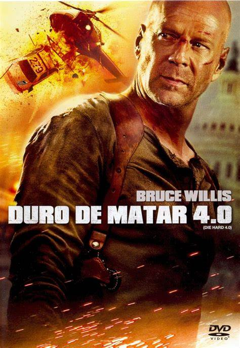
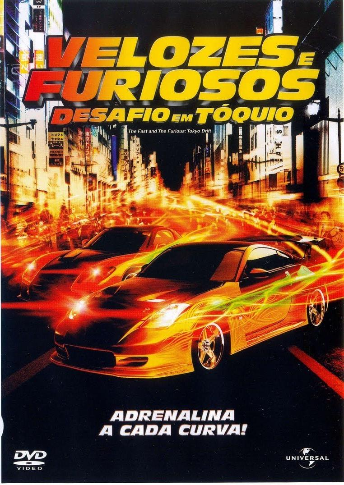
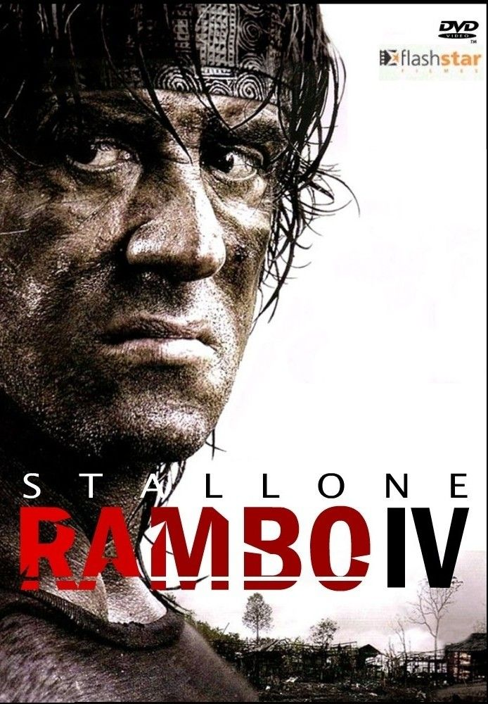
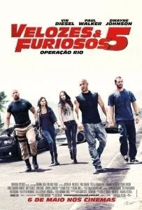
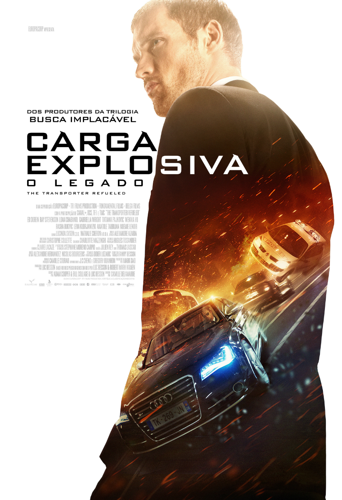
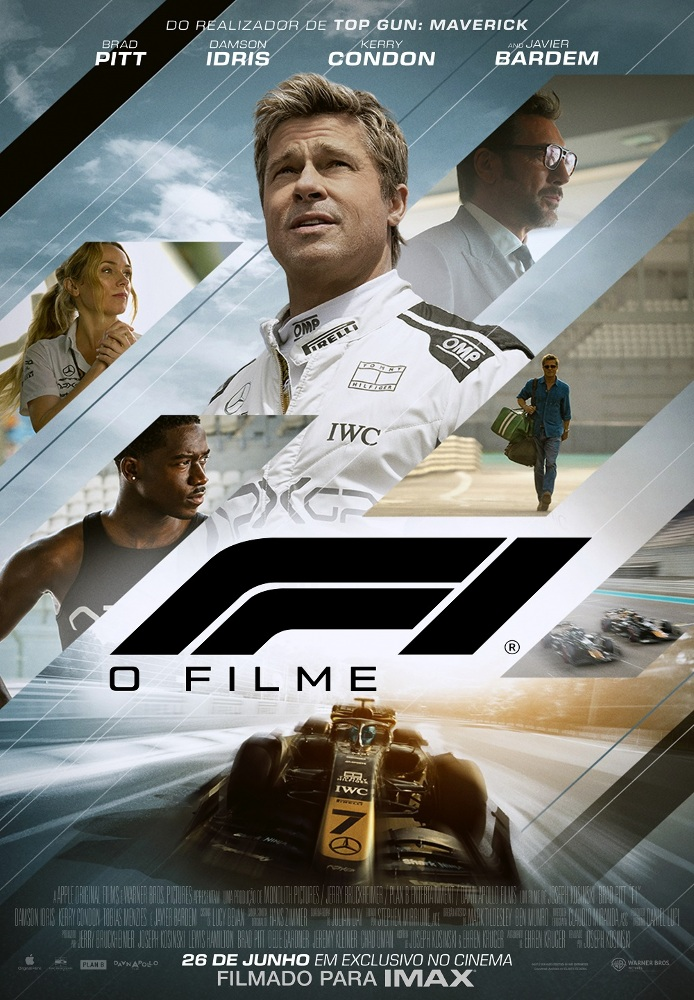
Séries 📹
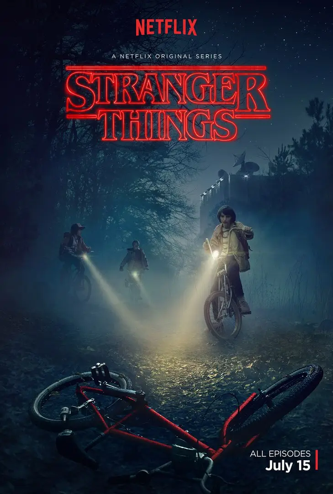
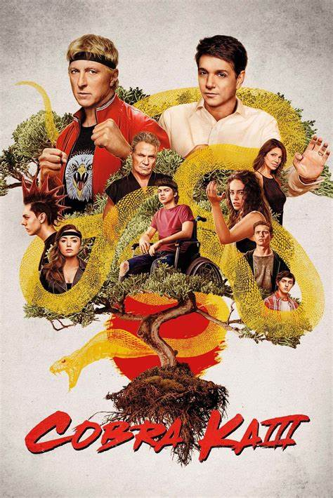
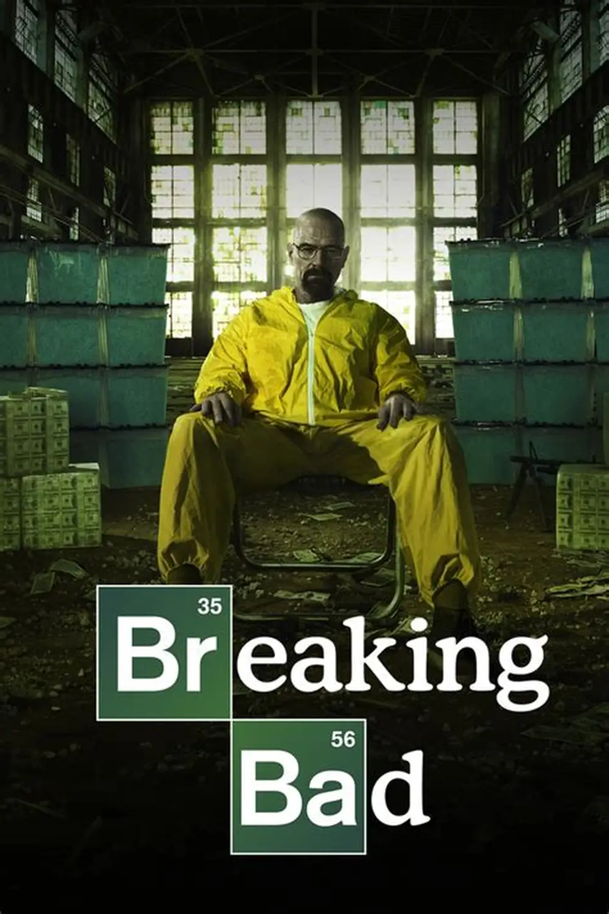
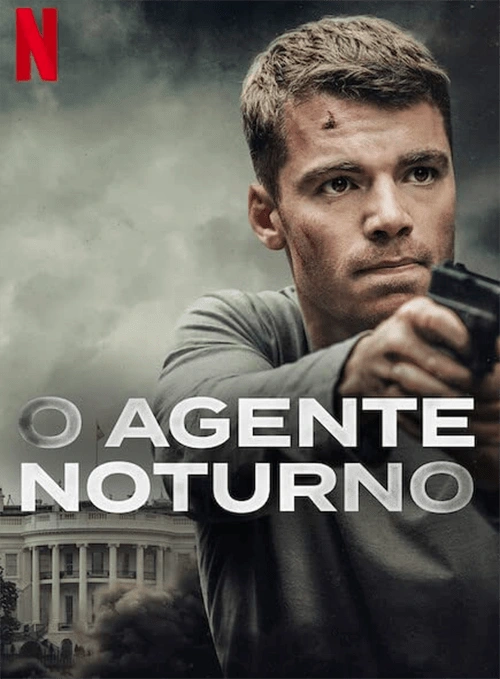
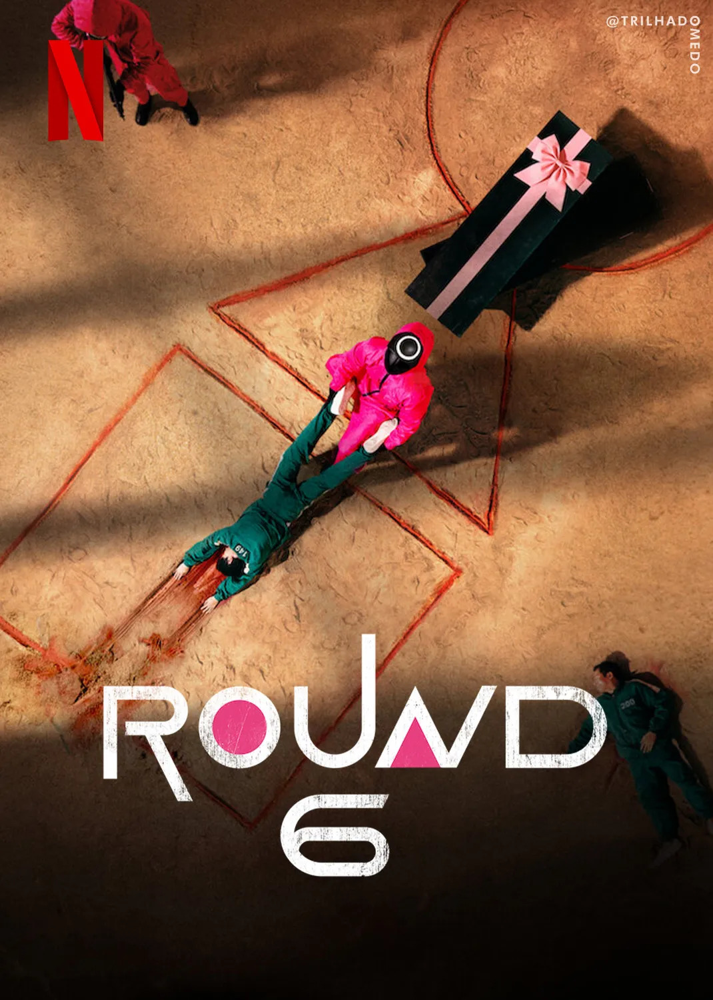
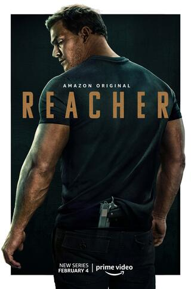
Informações Sobre Alguns Filmes:
Duro de Matar 4.0
Duro de Matar 4.0, também conhecido como Live Free or Die Hard, é o quarto filme da franquia Die Hard. Neste filme, o destemido detetive John McClane, interpretado por Bruce Willis, enfrenta um ciberterrorista chamado Thomas Gabriel, que decide espalhar o caos em Washington D.C.
Informações sobre o filme Duro de Matar 4Rambo-IV
John Rambo, um veterano de guerra, vive uma vida tranquila na Tailândia. No entanto, quando dois missionários são sequestrados na fronteira com a Birmânia, Rambo decide ajudar. Ele lidera uma operação de resgate perigosa, enfrentando inimigos implacáveis e revelando suas habilidades de combate. O filme é repleto de ação e tensão, mostrando a luta de Rambo para salvar os reféns.
Informações sobre o filme Rambo 4Velozes e Furiosos
Dominic Toretto, líder de uma gangue de corridas de rua em Los Angeles, é procurado pela polícia por roubo de equipamentos eletrônicos. Brian O’Conner, um policial disfarçado, se infiltra na gangue para investigá-lo. O’Conner acaba se apaixonando pela irmã de Toretto e, em vez de prendê-lo, une-se ao cunhado. A trama é repleta de ação, corridas emocionantes e reviravoltas.
Informações sobre o filme Velozes e FuriososAté o Ultimo Homem
Até o Último Homem é um filme baseado na história real de Desmond T. Doss, um soldado do Exército dos Estados Unidos durante a Segunda Guerra Mundial. Desmond, apesar de se recusar a portar armas, serviu como socorrista médico em Okinawa, Japão, salvando a vida de muitos soldados. O filme celebra sua coragem e fé.
Informações sobre o filme Até o Ultimo HomemCarga Explosiva: O Legado
Carga Explosiva: O Legado é um prequel do filme Carga Explosiva. Ele explora o início da trajetória de Frank Martin, antes de se tornar o transportador de mercadorias desconhecidas. Frank é contratado por uma mulher misteriosa chamada Anna, mas logo descobre que está sendo enganado. Ele se envolve em um plano perigoso para salvar seu próprio pai. A trama é repleta de ação e adrenalina.
Informações sobre o filme Carga Explosiva: O Legado